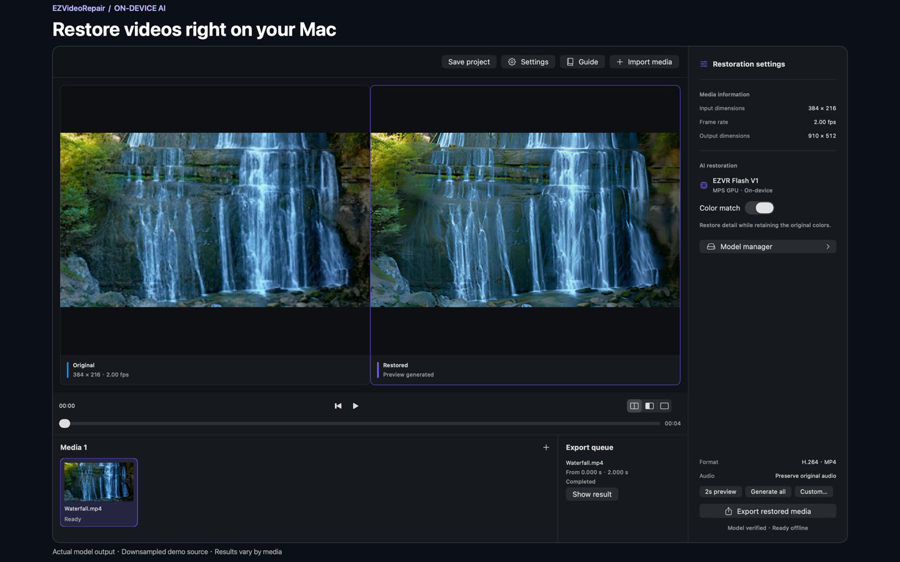
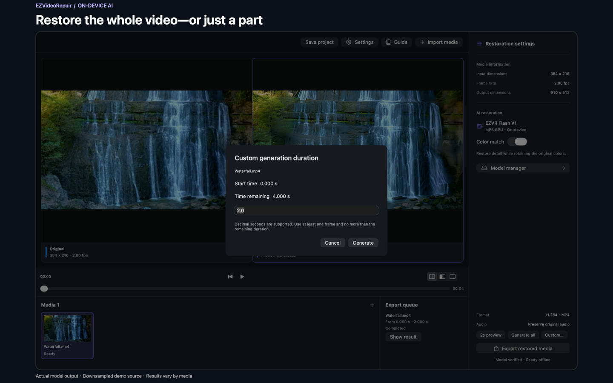
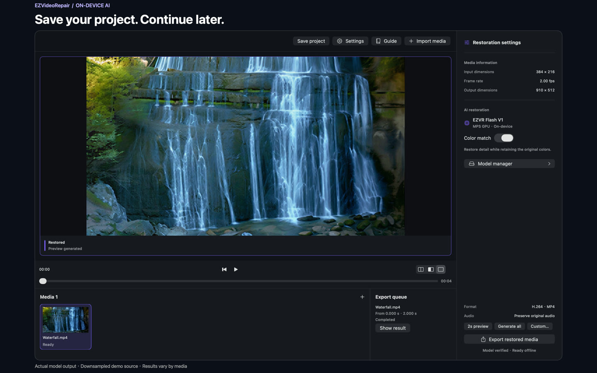

Preview before you commit
Generate a two-second preview from the selected time. Check it before processing the whole video.
Pick two seconds of footage to see how the details look before restoring a longer clip. You can restore individual photos on your Mac, too.
Version 0.0.2 (build 4). This download is not notarized by Apple. For Apple Silicon Macs running macOS 14 or later. Open the DMG and drag EZVideoRepair into Applications.

Compare the same two seconds before and after restoration. The source clip measures 384 × 216 pixels and runs at 2 fps.
Select a screenshot to see it at full size. These examples use downsampled footage. Results depend on the source.




Videos and photos are processed on your Mac. Once setup is complete, you can work offline.
Less distraction, more focus
A clear path from import to preview to export, without turning a simple restoration task into a complicated workspace.
Generate a two-second preview from the selected time. Check it before processing the whole video.
Restore a full video or set a custom duration. Work on just the part you need.
Preview a section of a landscape or portrait video, or open a single photo to inspect the restored details.
Reopen a saved project to find your settings and finished results where you left them.
Matching media and settings reuse completed results, reducing unnecessary processing.
Setup files download in the background. Check their progress, pause the download, or resume it later.
From footage to results
Open the DMG and drag EZVideoRepair into Applications. Launch the app and follow the setup prompts.
Import your media, choose a start time, and inspect a two-second preview.
Choose a full video or a custom duration, export the result, or save a project to continue later.
No. Your Mac processes your videos and photos locally. Initial setup may need an internet connection to download files.
Restoration currently supports Apple Silicon Macs only. Intel Macs and Windows are not supported.
It depends on your Mac, the media and its duration. Processing may take much longer than playback. Start with a two-second preview to decide how much to process.
Yes. A project keeps your settings and restored results, and refers back to the original media. Copy both the project and the originals to your new Mac.
Download for Mac (DMG) Open the DMG and drag EZVideoRepair into Applications.
From preview to export, your Mac processes your videos and photos without uploading them. You decide whether to share the results.
Download for Mac (DMG)